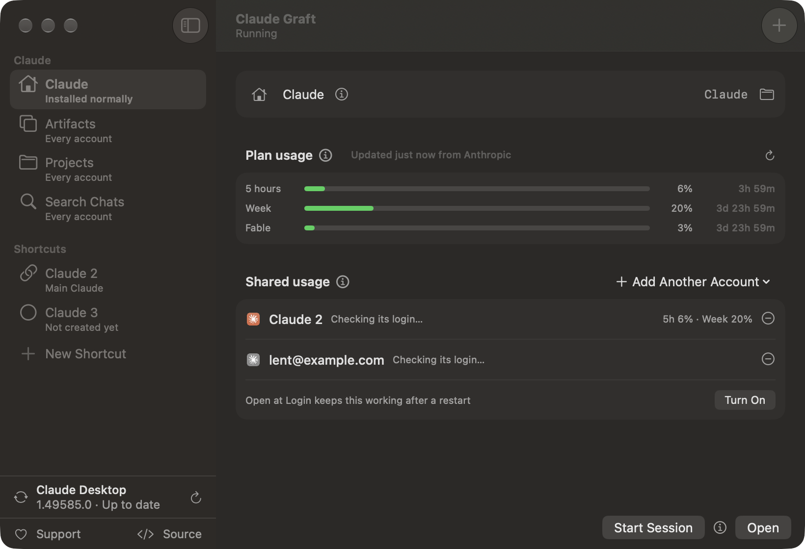
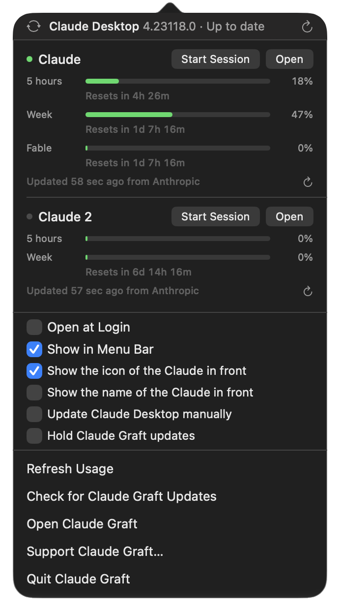
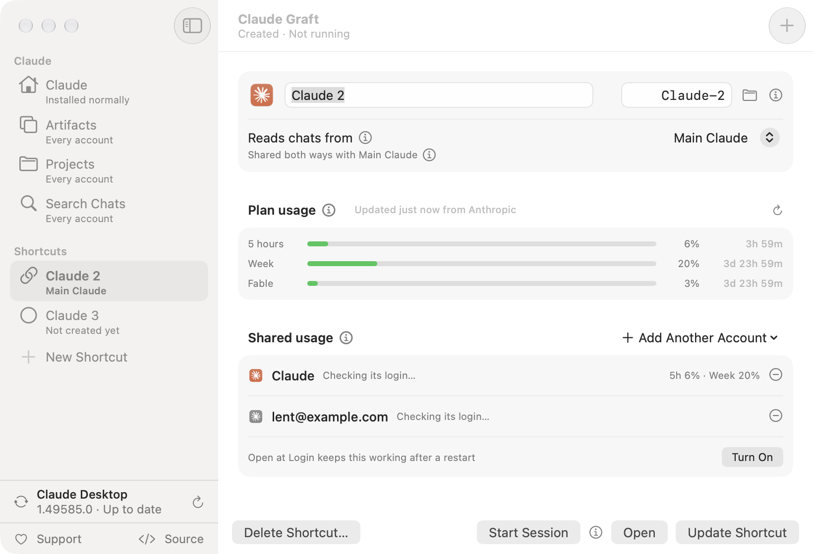
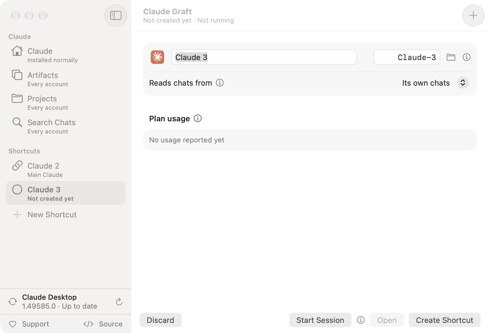
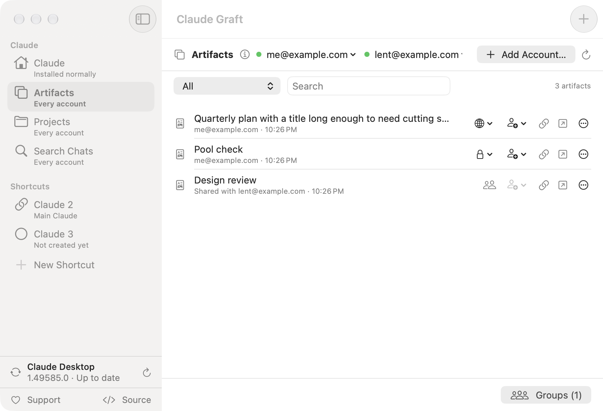
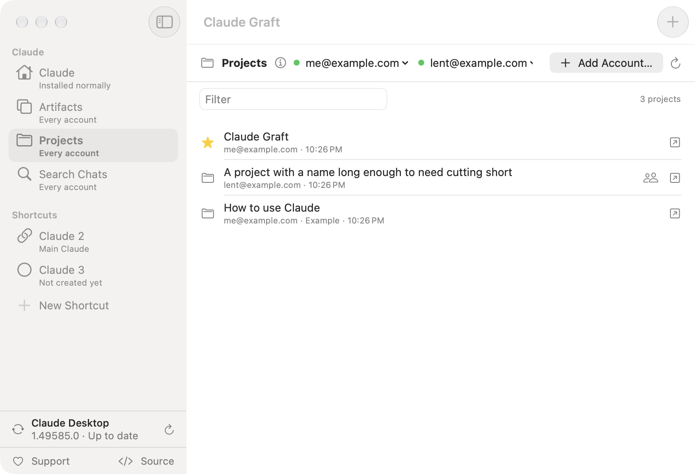
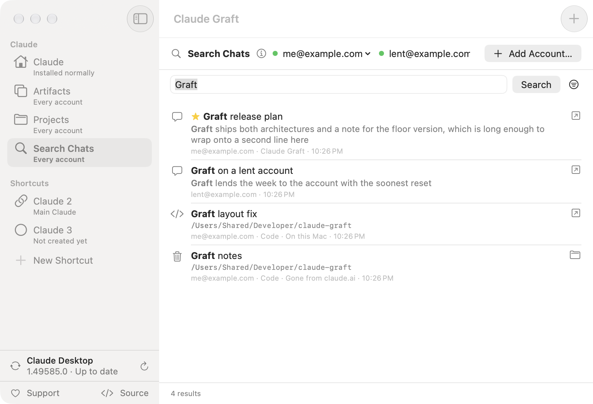

1× is less but 5× is too much.
Or 20× is less, lol.
One Claude login is never quite the right amount. Claude Graft runs every Claude account you have side by side, each signed in on its own, and lets them share their usage, so when one runs out, Claude Code carries on with another's.
brew install --cask aaditya-v-more/claude-graft/claude-graft


Shortcuts
A Claude for every account.
New Shortcut makes a small app that opens Claude on a profile of its own. Sign in once and it stays signed in. Launch it from Spotlight, keep it in the Dock, and tell it apart by a colour no other Claude wears.
A new Claude starts with chats of its own. Reading another Claude's chats instead is a choice you make on its page, and then they are shared both ways.
Each one carries its own launcher, so it opens whether or not Graft is running.


Artifacts, projects and chats
Every account, in one place.
Sign in to each account once, with the code claude.ai emails you, and see all of their artifacts, projects and chats together. Each sign-in is kept apart for its account, and Graft never reads it.

Open any artifact, copy its link, make it private or public, rename, duplicate or delete it, and export it as Markdown, PDF, Word or page source. Share one with a group you keep in Graft, each person as a viewer, commenter or editor.

Every account's projects together, each a click away on claude.ai.

Search every account's chats and Claude Code sessions at once, and filter by where a session ran or whether a chat is archived. A search goes out when you press Return, never as you type.
Safe by design
Careful with what matters.
Graft borrows as little as it can and destroys nothing. Updating keeps every Claude, setting and chat exactly as it was.
Borrowed, never taken
Graft reads only each Claude's access token, writes nothing back, and sends it to
api.anthropic.com alone.
Hands off what it didn't make
It knows its own apps by a file they carry, never by name, and Claude's own profile can't be deleted from it.
Sign-ins kept sealed
A claude.ai sign-in made in Graft lives in a store of its own for that account. Graft never reads it, and signing out removes it.
Updates that check themselves
Graft updates itself quietly, and every download is checked against a signing key that ships inside the app. Anything that doesn't match is refused.
Nothing measured
No account to make, no licence to buy, and nothing about you sent anywhere. It is free and MIT licensed.
Leaves cleanly
Remove the Homebrew cask and Graft takes its sharing back out of every Claude before it goes.
Install
Two minutes, no account.
Graft lives in the menu bar and keeps itself up to date. It needs macOS 13 and Claude Desktop; sharing usage needs macOS 15.
Graft is ad-hoc signed rather than notarised, so the first open goes through System Settings › Privacy & Security; the cask does that for you. Every release is on GitHub.
Free, and staying that way.
No licence to buy, no account to make, nothing measured and sent anywhere. It exists because running two Claude accounts was annoying enough to fix properly.
If it saved you the trouble, there's a tip jar, and that's what keeps it worked on: new macOS releases break things, and Claude Desktop moves its own furniture about every few weeks.
Support Claude Graft